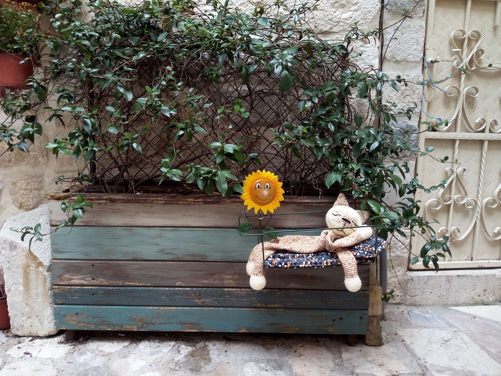

Kotor, Montenegro
Montenegro · Bay of Kotor
Nestled between dramatic mountains and the sparkling waters of the Adriatic, Kotor is one of Montenegro’s most captivating historic towns. Its medieval Old Town, surrounded by impressive stone walls, is a maze of narrow streets, charming squares, historic churches, and traditional architecture. Overlooking the beautiful Bay of Kotor, the town offers breathtaking views of the surrounding mountains and coastline. Walking through its historic streets reveals centuries of cultural heritage and the distinctive atmosphere of this remarkable Adriatic destination. These photographs capture my personal memories of Kotor and its unique character.
The town's Venetian-influenced architecture, ancient gates, and historic squares reflect its rich maritime past and centuries of cultural exchange. Beyond the city walls, the dramatic landscape of the bay creates a remarkable setting, with steep mountains rising above the water and small coastal settlements along the shoreline. The combination of natural scenery, historic landmarks, and Mediterranean atmosphere makes Kotor a particularly memorable place to explore. Walking through the Old Town also offers a chance to discover its quieter corners and appreciate the character of everyday life in this historic coastal town.